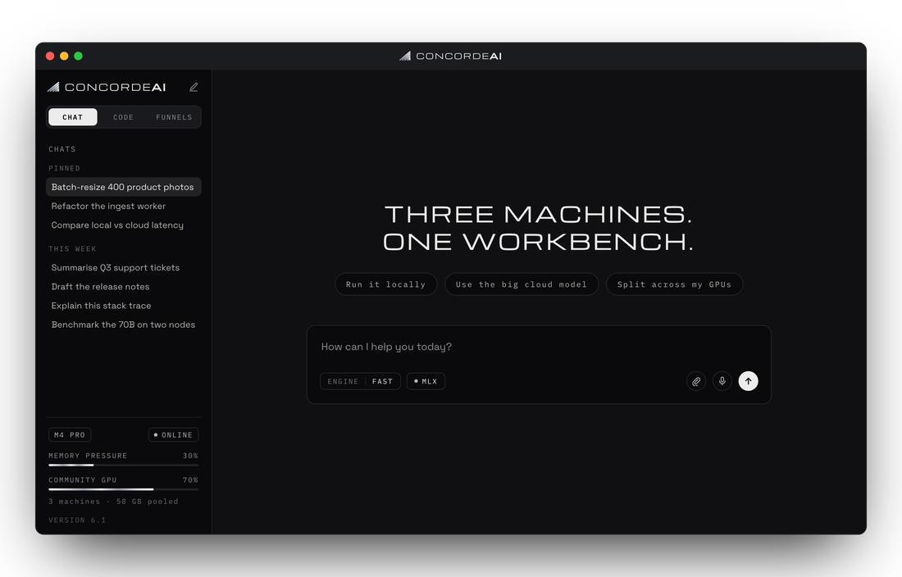

{kind=link}

DownloadsmacOS and Windows.
Installed copies update themselves.
ConcordeAI
An AI desktop app that puts cloud models, local models, and your own GPUs in one place.
macOS
Windows
-
01
Pooled GPUCombine GPU capacity across machines.
-
02
Cloud + localAdvanced cloud models and local models in one workflow.
-
03
FunnelStaged decision flows: pick through option cards, end with a recommendation.
-
04
Code featuresA code lane with a remote SSH agent and per-command approval.
Stable
6.0.4
Released
Release notes
- Image generation — ask for a picture and you get one; FLUX.1 schnell runs on your Mac, or a cloud model fills in
- Model downloads show real progress, and name what is actually downloading
- Enable visual effects now switches only the moving backdrop, not spinners and animations
- Check for updates automatically is yours to choose: at launch and once a day, or never
Release notes
- The most capable cloud model in every role, and the giants behind two boxes
{kind=link}
{kind=link}